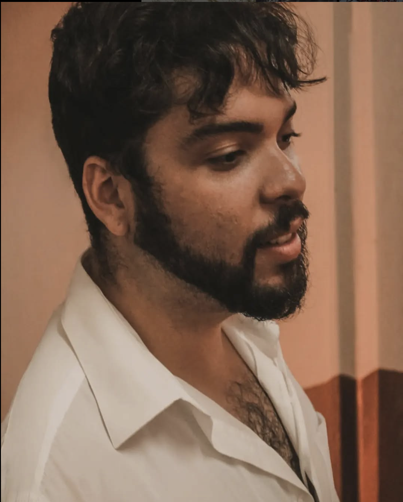

Sempre me considerei uma pessoa aérea e fora da caixinha, na maior parte do tempo eu estava fantasiando coisas que jamais poderiam existir no mundo real. Sempre me pegava imaginando como sería a vida se eu e meus amigos tivéssemos poderes. Fazendo isso desde criança então eu sempre botei tudo no lápis e no papel. Com o tempo, pensei em escrever um livro com todas essas fantasias, e fui moldando essa história até virar uma HQ. Comecei com esse projeto em 2005, até lá já foram tantas ideias, tantos pensamentos, tantas críticas e tantos aprendizados, mas aqui estamos.
The Legend of Me é um universo onde há pessoas com poderes, pessoas boas e ruins, poderes bons e poderes ruins, mas o mais interessante é acompanhar os personagens que flertam com essas duas linhas. O nome do uni-verso, aparentemente clichê, se deu através da inspiração de uma música da cantora e compositora Diana Gordon - The Legend of. Esta música saiu quando Diana resolveu se assumir no mundo artístico com o seu verdadeiro nome e sua verdadeira personalidade, gostos, expressões e traços musicais. Bom, como 99% dos personagens foram criados a partir de pessoas que conheço/ conheci e minha visão sobre elas pensei em assumir o título de The Legend of Me querendo representar o que e como essas pessoas representaram e afetaram minha vida de forma bem fantasiosa é claro.
The Legend of Sparks, sendo o título do primeiro volume, posso dizer que é uma introdução deste universo, é como se estivesse entrando em um lugar novo e conhecendo novos personagens os quais cada um tem seus próprios objetivos, desejos, motivações, falhas e assim como o protagonista Voltz, vamos descobrindo aos poucos sobre esse universo e personagens e como isso vai afetá-lo, moldá-lo... O tirar da sua zona de conforto aos poucos.
Esta é minha homenagem pra alguns, minha declaração pra outros, minha admiração para vários e minha fantasia para todos. Espero que todos gos tem, pois este trabalho é feito tanto para mim como para vocês